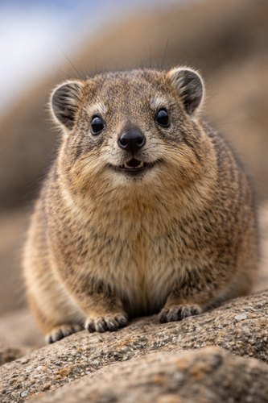
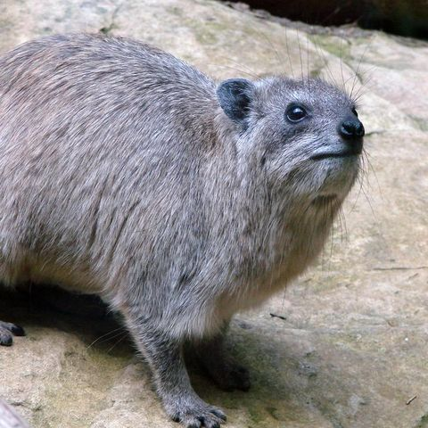
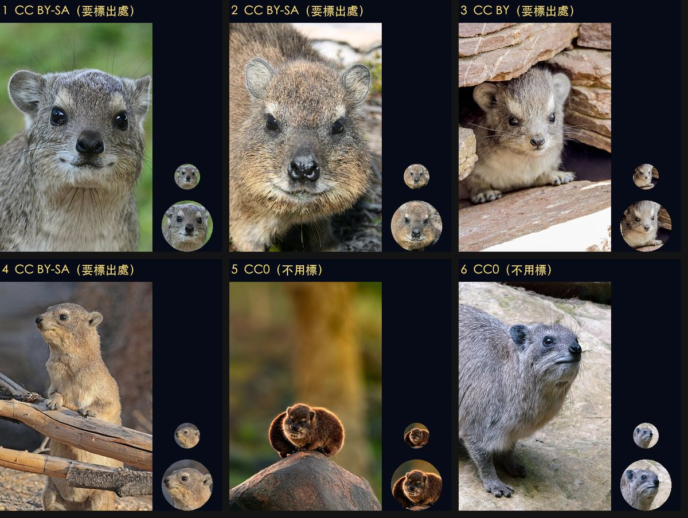
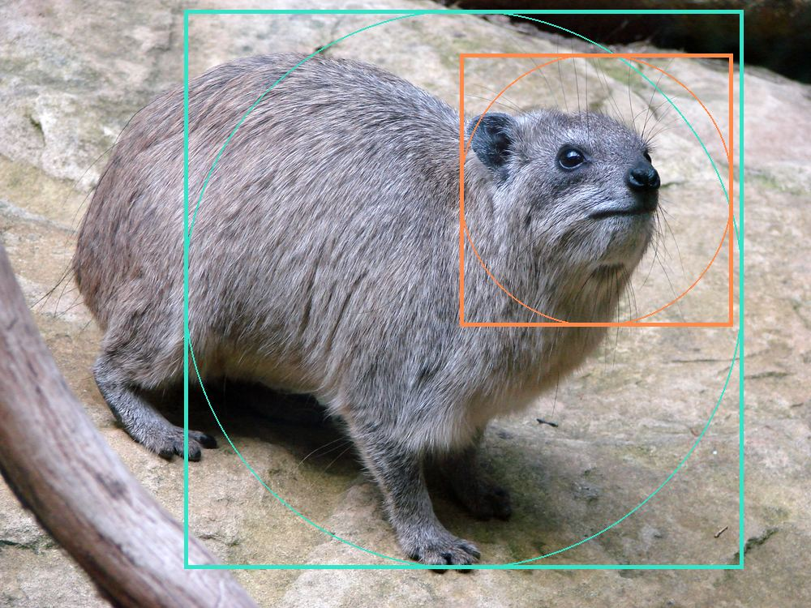

方法筆記 · 2026-10-20
以 hyrax.tw 的蹄兔吉祥物為例：先查路線再下載，授權和真偽都查清楚，照版位形狀裁圖，最後隔離分支才上線。下面把每一步做過的表全部列出來，下次換別的圖可以直接照抄。


| # | 步驟 | 做什麼 | 產出 |
|---|---|---|---|
1 | 盤點版位 | 找出舊圖用在哪些地方，讀 CSS 確認版位形狀（ border-radius、object-fit） | 首頁大圖（打開網站第一眼看到的那張）是圓形 400 px、小圓章 56 px |
2 | 查路線 | 下載前先 traceroute，挑一個不經過香港的機房 | 選定 Wikimedia 馬賽機房 |
3 | 撈候選 | 用 Commons API 分開搜「精選／高品質」「CC0」和各種蹄兔的名字，合併去掉重複，授權欄位一起抓回來 | 152 筆清單 |
4 | 篩選 | 依尺寸、主題過濾（授權只記錄、不刷掉），再下載縮圖逐張看 | 6 張候選對照圖 |
5 | 驗真 | 讀 EXIF 相機資訊、上傳者、分類標籤 | 確認是相機實拍 |
6 | 裁圖 | 每個版位各裁一張，壓縮並清掉 EXIF | 720×720 大圖、168×168 小圓章 |
7 | 預覽 | 離線預覽桌機和手機版（擋掉外部字型） | 4 張截圖 |
8 | 交叉檢查 | 4 個 AI 分身分別查改動範圍、HTML／CSS、文案事實、授權與真偽 | 全部通過 |
9 | 上線 | 只推換圖那一筆，再用 GitHub API 確認建置完成 | Pages 狀態 built |
下載照片是從自己的電腦直接連到圖庫。我不希望連線經過中國或香港，所以下載前先用 traceroute 看路線，再用 ping 量延遲來確認位置。下表是 2026-10-20 從台灣學術網路（TANet）實測的結果，只驗了去程；換了網路就要重查。
| 來源 | 機房／節點 | 從台灣出發的路線 | 判定 |
|---|---|---|---|
Wikimedia 預設 | 新加坡 eqsin 103.102.166.x | SEEDNET → NTT 台北 → 中間 4 跳不回應 → NTT 新加坡 | ❓ 看不出 |
Wikimedia 美國 | 舊金山 ulsfo、達拉斯 codfw、維吉尼亞 eqiad | PCCW Global（香港註冊網段）→ 中段不回應 → NTT 美國 | ❌ 不用 |
Wikimedia 阿姆斯特丹 | esams 185.15.59.x | SEEDNET → 中間 2 跳不回應 → 阿姆斯特丹交換中心 | ❓ 看不出 |
Wikimedia 馬賽 | drmrs 185.15.58.x | Tata：台北 → 東京 → 美國 → 倫敦 → 馬賽，全程沒看到香港 | ✅ 採用 |
Flickr 圖檔 | CloudFront tpe53 | DNS 反查是台北節點（沒做 traceroute） | ❓ 備案 |
Unsplash 圖檔 | Fastly | 推定在香港交接給下一家網路 | ❌ 不用 |
Pexels 圖檔 | Cloudflare 104 段 | TANet 交給 Telstra，在香港交接 | ❌ 不用 |
iNaturalist | Cloudflare 104 段 | 同上 | ❌ 不用 |
怎麼判斷馬賽那條沒經過香港：東京之後的下一個看得到的節點是 Tata 美國網段，ping 最低 236 ms；如果它在香港，從台灣 ping 只會是 20 ms 上下。不過延遲只能證明這個節點本身不在香港，沒回應的那幾跳還是看不到，所以只能說「沒看到香港」。
--resolve 只是告訴 curl 要連哪個 IP，網址和 HTTPS 憑證都不變：
# 查清單（Commons API）
curl --resolve commons.wikimedia.org:443:185.15.58.224 \
-G 'https://commons.wikimedia.org/w/api.php' \
--data-urlencode 'action=query' --data-urlencode 'format=json' \
--data-urlencode 'generator=search' --data-urlencode 'gsrnamespace=6' \
--data-urlencode 'gsrsearch=hyrax hastemplate:QualityImage filetype:bitmap' \
--data-urlencode 'prop=imageinfo' \
--data-urlencode 'iiprop=url|size|extmetadata|commonmetadata'
# 下載圖檔
curl --resolve upload.wikimedia.org:443:185.15.58.240 \
-o photo.jpg 'https://upload.wikimedia.org/wikipedia/commons/…'Wikimedia Commons 只收自由授權，所以「禁止商用（NC）」和「禁止改作（ND）」不會出現；改用其他圖庫時要自己把它們擋掉。
| 授權 | 可以商用 | 要標出處 | 裁切後要用同授權 | 主題篩完的 76 張中 |
|---|---|---|---|---|
CC0 | 可以 | 不用 | 不用 | 20 |
公有領域（PD） | 可以 | 不用 | 不用 | 3 |
CC BY | 可以 | 要 | 不用 | 11 |
CC BY-SA | 可以 | 要 | 要（裁過的圖也要用 CC BY-SA 釋出） | 42 |
CC BY-NC／CC BY-ND | NC 不行 | 要 | ND 不能改作 | 0 |
挑 CC0 最省事：網站上不用掛攝影者名字。這次還是在頁尾標了出處，那是禮貌，不是義務。
| 階段 | 剩幾張 | 條件 |
|---|---|---|
Commons API 搜尋 | 152 | 分開搜「精選／高品質／有價值圖片」「CC0」和各種蹄兔的學名、俗名，再合併去掉重複。每組只取第一頁（最多 50 筆），有 2 組其實還有下一頁 |
尺寸 | 119 | 短邊至少 1,200 px：版位 400 px，Retina 螢幕要約 2 倍，還要留裁切空間 |
主題 | 76 | 依檔名和分類粗篩，排除大部分頭骨、古畫、地圖、海報、毛皮和無關照片。還是有 3 張館藏標本、2 張手繪、1 張岩鼠（囓齒類，不是蹄兔）漏網，到下一步細看才刷掉 |
細看 | 13 | 下載 960 px 預覽，挑正臉、對焦清楚、背景乾淨的 |
候選 | 6 | 照版位裁出模擬效果，交給人挑 |
選定 | 1 | 6 號，CC0 |

| # | 內容 | 攝影者 | 授權 | 要標出處 | 相機（EXIF） |
|---|---|---|---|---|---|
1 | 黃斑岩蹄兔正臉，坦尚尼亞 | DipaliLath | CC BY-SA 4.0 | 要 | Nikon D7000，2016 |
2 | 岩蹄兔正臉近拍，南非 | Christoph Hermann | CC BY-SA 4.0 | 要 | Canon EOS 400D，2013 |
3 | 幼蹄兔從石縫探頭，肯亞 | Esin Üstün | CC BY 2.0 | 要 | 沒有 EXIF |
4 | 岩蹄兔站起來扶著樹枝（Commons 精選圖片） | Charles J. Sharp | CC BY-SA 4.0 | 要 | 只剩修圖軟體欄位 |
5 | 逆光坐在石頭上，南非 | Stanislav Stelmakhovich | CC0 | 不用 | Canon EOS R3，2025 |
6 | 岩蹄兔（灰色毛），法國 Amnéville 動物園 選定 | Vassil | CC0 | 不用 | Sony DSC-H5，2010 |
舊圖會被換掉，就是因為它看起來像 AI 生成。所以新圖除了授權，還要確認是真的照片。
| 檢查項 | 怎麼查 | 6 號的結果 |
|---|---|---|
相機 EXIF | Commons API 的 commonmetadata | Sony DSC-H5，相機時間 2010-08-27，f/3.5、1/80 秒、ISO 320、焦距 33.1 mm。另有 Photoshop CS2 的處理紀錄（2011-01-02），屬於一般後製，不影響實拍判斷 |
上傳者 | 分類有沒有「Self-published work」 | 有，攝影者自己上傳 |
授權 | LicenseShortName 和分類「CC-Zero」 | CC0 |
其他限制 | 有沒有肖像權、商標的警示分類 | 沒有（動物照，畫面裡沒有人和商標） |
肉眼 | 毛髮、鬍鬚、腳爪、陰影自不自然 | 自然，沒有 AI 常見的糊邊、毛髮黏成一片或腳趾數目不對 |

| 用途 | 版位 | 顯示尺寸 | 輸出 | 檔案大小 |
|---|---|---|---|---|
首頁大圖 hyrax.jpg | 圓形（ border-radius:50%） | 桌機 400 px、手機約 250 px | 720×720，JPEG 品質 75 | 105 KB |
小圓章 hyrax-badge.jpg | 圓形 | 56 px（手機 44 px） | 168×168（3 倍） | 9 KB |
另一個頁面的吉祥物卡片 | 圓形 | 84 px（手機 64 px） | 共用小圓章那張 | — |
| 輸出尺寸 | 品質 70 | 品質 75 | 品質 80 |
|---|---|---|---|
800×800 | 117 KB | 129 KB | 147 KB |
720×720 | 96 KB | 105 KB ✓ | 120 KB |
640×640 | 76 KB | 84 KB | 96 KB |
800 比 720 大 24 KB，肉眼幾乎看不出差別，所以選 720（約 1.8 倍）；手機上版位約 250 px，720 已經超過 2 倍。
| 風險 | 做法 |
|---|---|
本機 main 上還有其他還沒要上線的改動，一推就整包上去 | 從線上版另開 git worktree 修改，推送時寫明 git push origin <commit>:refs/heads/main |
另一個 AI 工作階段同時在改同一個 repo | 只 git add 自己改的檔案再 commit（不要用 -a 或 git add .）。換圖記得把圖檔一起列進去，例如 git add index.html assets/hyrax.jpg assets/hyrax-badge.jpg。別人沒 commit 的檔案一個都不碰，再傳訊息告訴對方 |
確認上線要連 github.io（Fastly，推定經香港） | 改用 GitHub API 查 Pages 建置狀態和遠端檔案，不直接連網站 |
預覽時頁面會去抓 Google Fonts | 預覽用的副本先拿掉外部字型；headless Chrome 加 --host-resolver-rules 擋掉所有外部網域 |
推完馬上看，可能還是舊圖 | Pages 快取最久約 10 分鐘；強制重新整理：Chrome、Firefox 按 ⌘⇧R，Safari 按 ⌥⌘R |
# 確認 Pages 用的是剛推的 commit，而且建置完成
gh api repos/<帳號>/<repo>/pages/builds/latest --jq '.status + " " + .commit'
# → built e48f77b…推送那行 git push origin <commit>:refs/heads/main：冒號左邊是「要推哪一筆」，右邊是「推到哪個分支」（Git 叫它 refspec）。寫明白就不會把本機其他改動一起推上去。
上線前派 4 個 AI 分身各查一個面向，都只能讀、不能改，也不能連網（只有查事實那位可以用網路搜尋）。
| 檢查員 | 看什麼 | 結果 |
|---|---|---|
改動範圍 | 是不是只動 3 個檔、有沒有夾帶改版內容、網域設定有沒有被動到、推送是不是直接接在線上版後面 | 通過 提醒推送一定要寫明「哪一筆推到哪個分支」 |
HTML／CSS | 另一個頁面新增的吉祥物卡片：HTML 標籤配對、CSS 大括號、手機斷點、文案規則 | 通過 |
事實查核 | 吉祥物介紹的 4 個說法：分布、草食、像天竺鼠、跟大象和海牛是近親 | 通過 附 Wikipedia、Smithsonian 國家動物園、PMC 論文等來源 |
授權與真偽 | CC0、自行上傳、相機 EXIF、成品有沒有殘留 EXIF | 通過 |
| 坑 | 解法 |
|---|---|
首頁大圖的版位其實是圓形，第一版照直式裁 | 先讀 CSS 的 border-radius、object-fit，再決定裁法 |
Commons 回傳的縮圖網址換成 thumb.wikimedia.org | 只取路徑，改從 upload.wikimedia.org 下載，一樣指定馬賽機房 |
zsh 寫 while read id path，結果 $PATH 被蓋掉，找不到 curl | path 是 zsh 的特殊變數，改名成 tp |
連線檢查工具把 User-Agent 裡的網址當成要連的地方 | User-Agent 不放網址 |
Commons API 連續查太快，回 429 | 每次請求間隔 0.3 秒，被擋的那一筆略過 |
ImageMagick 拼對照圖時找不到 Helvetica，號碼沒印出來 | 改用 Python Pillow 的內建字型畫號碼 |
改 repo 改到一半，發現另一個工作階段也在改 | 見第 08 節：只 commit 自己的檔案，推送寫明「哪一筆推到哪個分支」，並通知對方 |